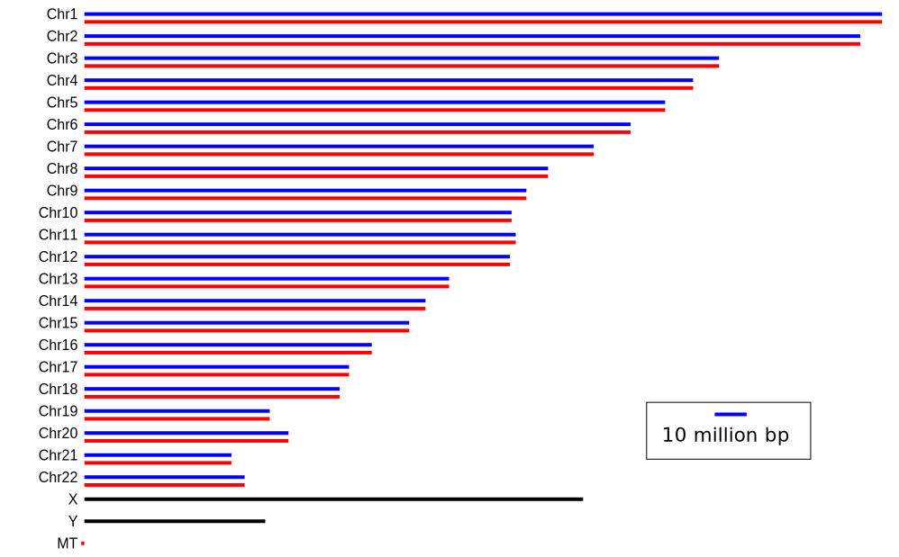
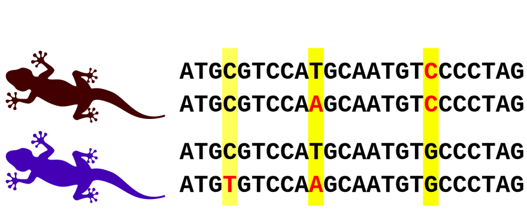
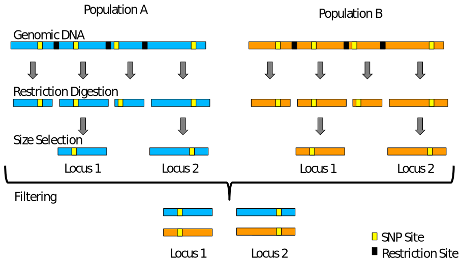

Sequencing Technologies
ENS-4404 Genetics and the Conservation of small populations
Dr Axel Barlow
email: a.barlow.@bangor.ac.uk
Sequencing Technologies
- What do we sequence?
- Genome assemblies and genome resequencing
- Illumina
- Pac Bio
- Oxford Nanopore
What do we sequence?
Your genome

Molecular markers
Multiple methods exist for determining genotypes at genetic loci
- Allozymes
- AFLPs
- RFLPs
- RAPDs
- Microsatellites
- SNPs
SNPs require genotyping by sequencing (GBS)
SNPs (single nucleotide polymorphisms)

Getting SNPs: RADseq
- RADseq: Restriction site associated DNA sequencing

Getting SNPs: SNP arrays
- Target pre-determined SNP panels
- Thousands of loci
- Humans
- Domesticated species

Getting SNPs: Whole genome sequencing
Genome assemblies and resequencing
Genome assemblies
- Sequence reads assembled into a reference genome
- de novo genome assembly
- Typically a single individual
- Typically uses long read technology
- Modern methods recover both haplotypes
- Requires annotation
Several quality metrics:
- Scaffold/chromosome level
- Scaffold N50
- BUSCO

Genome resequencing
- Sequencing reads mapped to an existing reference genome
- Easy to identify SNPs relative to reference, and to other samples
- Typically uses short read technology
- Much cheaper than de novo assembly
- Accuracy depends on the number of reads in the stack, termed depth or coverage
- Particularly heterozygous positions

Genome resequencing

Illumina
Illumina

Data output
| Platform | read pairs | Read length | data output | Genome coverage |
|---|---|---|---|---|
| MiniSeq | 25 million | 2 x 150 bp | 7.5 Gb | 2 x |
| MiSeq | 25 million | 2 x 300 bp | 15 Gb | 4 x |
| NextSeq 550 | 400 million | 2 x 150 bp | 120 Gb | 33 x |
| NextSeq 2000 | 900 million | 2 x 300 bp | 540 Gb | 150 x |
| HiSeq X | 6 billion | 2 x 150 bp | 1.8 Tb | 500 x |
| NovaSeq X Plus | 52 billion | 2 x 150 bp | 16 Tb* | 4444 x |
- *16 Tb = 16,000,000,000,000 bp
Sequencing by synthesis
- Sample preparation
- Bind DNA to flowcell, generate clusters
- Sequencing by synthesis
- Data analysis (in the machine)
Sample preparation

*Indexes allow multiple samples to be sequenced at the same time
Flow cell

Cluster generation

Sequencing by synthesis

Data analysis (in the machine)

Illumina summary
- The current market leader
- Massive output
- High accuracy
- Many applications (genome resequencing, RADseq, transcriptomes, metabarcoding)
- Cheap (£8 per Gb)
- Major limitation is the read length
PacBio
PacBio

Single Molecule, Real-Time (SMRT) sequencing

HiFi reads

PacBio summary
- Single molecule sequencing (no cluster generation)
- Long reads (around 25 kb)
- 75 Gb per SMRT Cell for Revio
- Fantastic for genome assemblies
- Historically high sequencing error, solved by HiFi sequencing
- Still more expensive than Illumina (~£3k per SMRT cell with library prep)
- Price falling rapidly
Oxford Nanopore
Oxford Nanopore

How it works

Field based sequencing

Quick et al. 2016. Real-time, portable genome sequencing for Ebola surveillance. Nature
Oxford Nanopore summary
- Variable output, up to Tb's with larger platforms
- Long reads, record is 2.3 Mb!
- Output 20-30 Gb (up to 50 Gb) per Minion flow cell
- High error rate, currently 5-10 % but improving
- Still more expensive than Illumina and PacBio (~£750 for Minion flow cell and library prep)
- True portability and real time sequencing/analysis
- But need to buy sequencer: Minion £4,650 inc. 5 flow cells
Recommended reading
Recommended reading
Recommended reading
Next time:
How to design a genomics project